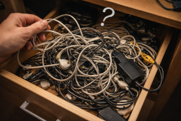

Paradox of Tangled Wires

| Type | Domestic technological paradox |
| Participants | 2 or more wires, 1 confused human |
| Outcome | Spontaneous knot formation |
| Main feature | Order degrades even without visible interaction |
| Reliability | Disturbingly consistent |
The Paradox of Tangled Wires is a widely observed phenomenon in which cables, earphones, chargers, and similar elongated technological objects become entangled after being placed together for a short period of time. The effect is especially notable when the wires were previously believed to be “carefully put away”.
The paradox has been documented in backpacks, drawers, pockets, boxes, and all other environments that should, in theory, allow wires to remain in a stable and separated state. Instead, the wires rapidly reorganize themselves into dense and irrational formations.
Mechanism
The exact mechanism remains disputed. Traditional physics explains the phenomenon through motion, friction, looping, and confinement. However, observers have repeatedly noted that wire tangling often appears to exceed what seems reasonable for the available time, space, and patience.
Major theories include:
- micro-movements within bags and pockets that gradually create loops;
- electromagnetic resentment between similar cables;
- a natural tendency of wires to seek maximum inconvenience;
- self-knotting behavior triggered by human confidence.
The last theory remains especially influential in Memopedian literature, as the probability of tangling appears to increase in direct proportion to the phrase “I’ll sort these out later”.
Stages
- Arrangement stage. The wires are placed together in what appears to be a safe configuration.
- Neglect stage. The wires remain unsupervised for a brief period.
- Loop formation stage. Small crossings begin to appear.
- Compression stage. The structure tightens into a compact mass.
- Discovery stage. The user opens the container and immediately regrets previous life choices.
- Extraction stage. One specific wire becomes impossible to remove without affecting all others.
Effects
- loss of time during untangling;
- sudden increase in stress and disbelief;
- damage to patience, mood, and occasionally cables;
- temporary abandonment of the original task;
- renewed promises to “organize everything later”.
In severe cases, the affected individual may begin pulling at random sections of the wire cluster, which usually worsens the situation and strengthens the knot structure.
Scientific debates
Scientific opinion is traditionally divided into three major camps. The first insists that wire tangling is a predictable mechanical process. The second argues that the phenomenon is too efficient to be accidental. The third maintains that certain wires possess an undocumented instinct for knot formation.
A smaller but vocal school proposes that the paradox is not created by the wires themselves, but by the surrounding environment, which subtly rearranges objects whenever a person is in a hurry.
Classification
- Minor case. Two cables cross once and can be separated quickly.
- Moderate case. Several loops form a recognizable but annoying knot.
- Severe case. The bundle appears to have developed internal architecture.
- Critical case. The user gives up and buys a new cable.
The most dangerous subtype is the earphone singularity, in which a single pair of earphones produces a knot normally associated with maritime equipment.